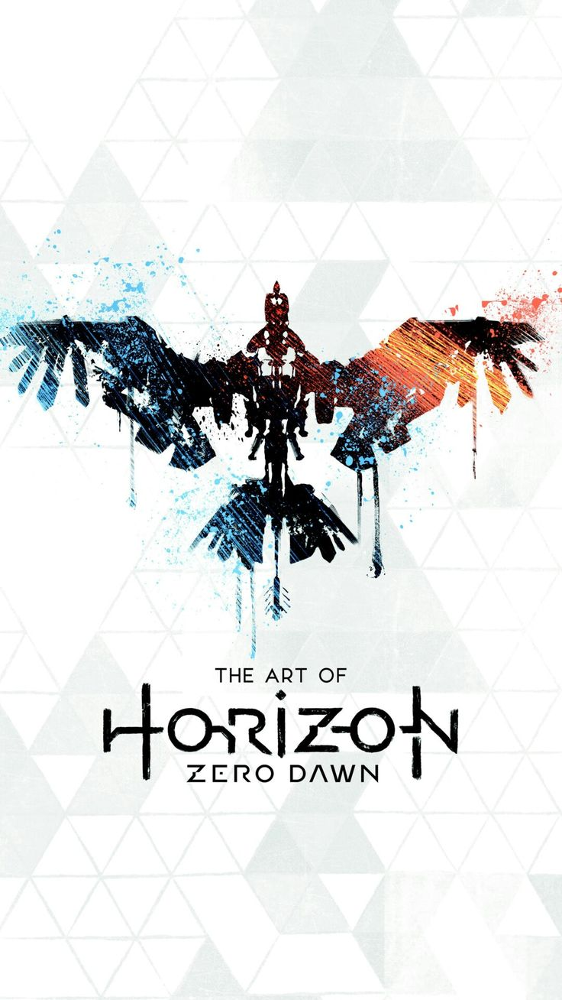

Aloy (Ashly Burch) is cast out from the Nora tribe at birth and raised by a fellow outcast named Rost (JB Blanc). As a child (Ava Potter), Aloy obtains a Focus, an augmented reality device that gives her special perceptive abilities. Aloy becomes curious about her origins and is told by Rost that if she wins the Proving, a competition to earn the right to become a member of the Nora, the tribe's Matriarchs might concede this information. Aloy spends some years training in combat and survival under Rost's instruction.
After coming of age, Aloy participates in the Proving; she wins the competition, but masked cultists attack the Nora. Rost sacrifices himself to save Aloy from their leader, Helis (Crispin Freeman). When Aloy awakens, the Matriarchs explain that Aloy was found as an infant before a sealed door within the Nora's sacred mountain and that these suspicious origins were the reason for her being an outcast. The Matriarchs name Aloy a "Seeker," allowing her to leave their lands in pursuit of the cultists. Aloy eventually learns that the cultists are part of a splinter Carja faction called the Eclipse and that Aloy was targeted due to her resemblance to an Old World scientist named Elisabet Sobeck (also voiced by Burch). Aloy locates the ruined corporate campus of Faro Automated Solutions and discovers that the Old World was destroyed nearly a thousand years ago after Faro lost control of its automated peacekeeper military robots. The robots, which could self-replicate and consume biomass, overran the planet and engulfed the biosphere, stripping Earth of life. Zero Dawn, a project spearheaded by Sobeck, was initiated to create an automated terraforming system to deactivate the robots and restore life to Earth.
Aloy is contacted by Sylens (Lance Reddick), a secretive Banuk figure interested in uncovering the fate of the Old Ones. Aloy learns that Sobeck was sent to a decommissioned Orbital Launch Base to complete Zero Dawn, located under the Citadel, the center of Eclipse power. Inside the base, Aloy learns that Zero Dawn was a vast underground system of databases, factories, and cloning facilities controlled by a single artificial intelligence, GAIA (Lesley Ewen), and her subsystems. Once all life had been extinguished, GAIA developed a countermeasure to deactivate the Faro robots and build her own animalistic machines to restore the Earth's biosphere. Once the planet was habitable again, GAIA's next goal was to reseed life on Earth based on stored DNA and teach the first human clones not to repeat their predecessors' mistakes. However, Faro's founder and CEO, Theodore Faro, sabotaged APOLLO, the subsystem designed to teach humanity. The new generation of humans was reduced to a tribal, subsistence society. The Eclipse are secretly controlled by HADES (John Gonzalez), another of GAIA's subsystems designed to enact controlled extinction if the outcome of Zero Dawn was not favourable for human existence. Reaching Sobeck's office, Aloy obtains a registry to give her access to the door beneath the Nora's mountain. She is captured by Helis and sentenced to death at the Citadel, but escapes with the help of Sylens. Aloy helps the Nora fight off the Eclipse and unlocks the mountain's door.
She finds a recording from GAIA, revealing that a signal of unknown origin caused HADES to activate and seize control of her functions; as a last resort, GAIA self-destructed to stop HADES, but failed and lost control of the other subsystems. Without GAIA to maintain the terraforming process, the entire system began to break down, leading to the Derangement. As a contingency plan, GAIA created a clone of Sobeck in the form of Aloy, hoping she would find GAIA's message, destroy HADES, and restore GAIA's functions. Aloy learns that Sobeck sacrificed her life to ensure the Faro robots would not find GAIA. Aloy manages to obtain the master override to destroy HADES. Sylens reveals that he founded the Eclipse, initially tempted by HADES' promises of knowledge when he discovered it. They surmise that HADES intends to send a signal to reactivate the Faro robots to extinguish life on Earth. Aloy kills Helis and helps fight off machines before stabbing HADES and activating the master override, ending the war. She journeys to Sobeck's old home, finds her corpse, and mourns her predecessor. In a post-credits scene, HADES is trapped by Sylens, who intends to interrogate HADES to find out who sent the signal that activated it
Aloy travels to the "Cut," the home of the Banuk tribe, after hearing word of dangerous machines appearing and a mountain belching smoke. She learns from Aratak (Richard Neil), chieftain of the largest Banuk clan, that the Banuk have been attempting to battle a "Daemon" on the mountain, "Thunder's Drum," which has corrupted the machines of the Cut. However, their first attack failed, and their shaman, Ourea, disappeared afterward. Aloy searches for Ourea, coming across strange robotic towers that control and repair the corrupted machines. She finds Ourea (Necar Zadegan) in an Old World facility that had been converted into a Banuk shrine and is housing an artificial intelligence the shaman calls the "Spirit." Aloy is able to make contact with the Spirit, which warns Ourea that the Daemon is blocking its transmissions before being cut off. Aloy and Ourea agree to work together to save the Spirit. Per Ourea's advice, Aloy defeats Aratak in a hunting competition, taking his place as chieftain. She also discovers that Aratak and Ourea are siblings
Aloy, Ourea, and Aratak head for Thunder's Drum. They infiltrate the Old World facility built inside the mountain, where Aloy discovers that the Spirit is actually CYAN (Laurel Lefkow), a highly advanced AI designed to prevent the Yellowstone Caldera from erupting. Travelling further inside, they discover that the Daemon has already overtaken much of the facility. However, CYAN suggests using lava from the caldera to destroy the infected areas while preserving the facility. It is also revealed that the Daemon is, in fact, HEPHAESTUS (Stefan Ashton Frank), another of GAIA's subsystems designed to manufacture machines. The group fights through HEPHAESTUS' defences, and Ourea sacrifices herself to override CYAN's core, allowing it to escape. CYAN transfers its core systems to an auxiliary data center and initiates self-destruction of the facility. Aloy and Aratak narrowly escape. Aloy returns to the Banuk Shrine, where CYAN is waiting; the AI provides additional information about the Old World but warns that HEPHAESTUS is still active somewhere and will continue to build machines explicitly designed to kill humans, which is why it tried to seize control of CYAN and its facilities. Returning Aratak to his previous position as Chieftain, Aloy departs the Cut